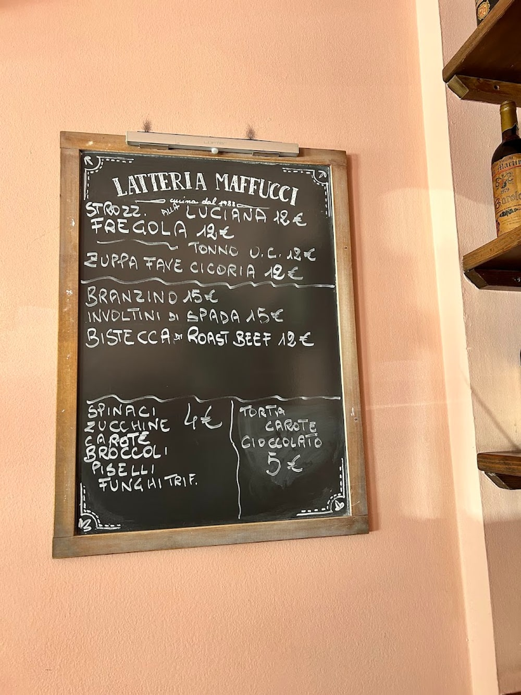
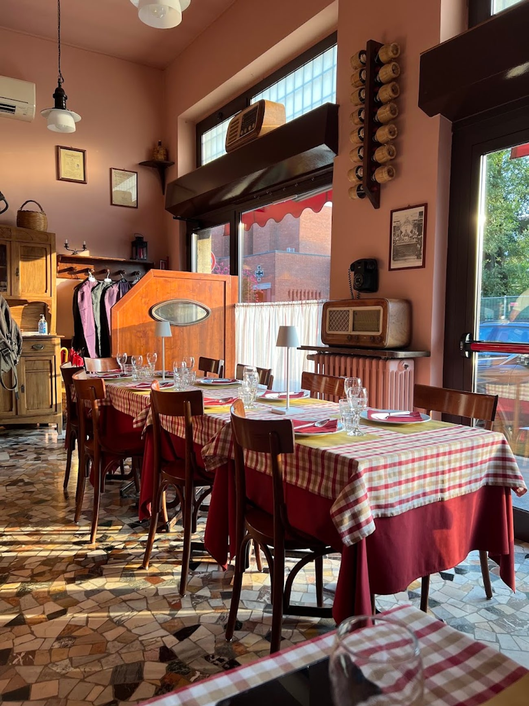

Ex latteria di quartiere · Dergano, Milano
A mezzogiorno
e la sera non è
lo stesso posto.
Lo stesso indirizzo, la stessa sala con le tovaglie a quadretti. Ma a pranzo c'è la trattoria, con la lavagna appesa al muro; la sera la cucina passa al pesce.
La settimana
Non serve spiegarlo:
basta guardare quando aprono.
Lunedì e martedì si apre solo a mezzogiorno. Sabato solo la sera. In mezzo, tre giorni in cui il locale fa tutti e due i mestieri.
Dal 1988
Prima era una latteria vera: vendeva il latte della Centrale di Milano, le uova, i formaggi e i panini ai muratori del quartiere.
Nel 1988 la rilevano Silvio Matta e la moglie Annunziata Riviecchio, per tutti Nunzia, e la trasformano in un piccolo ristorante. Il nome non lo cambiano. Oggi in cucina c'è la figlia Valentina.
Storia ricostruita da il Golosario e dalla loro pagina Facebook.
A mezzogiorno
La lavagna,
appesa al muro.
A pranzo funziona come una trattoria di quartiere: il menù è una lavagna scritta a gesso, con l'insegna in cima, e cambia con quello che c'è.
Questi erano i piatti il giorno in cui l'abbiamo fotografata. Non è una carta fissa: serve a far capire il registro.
- Strozzapreti alla Luciana — polpo, pomodoro, aglio, olive e capperi12
- Fregola12
- Zuppa di fave e cicoria12
- Branzino15
- Involtini di spada15
- Bistecca di roast beef12
- Contorni — spinaci, zucchine, carote, broccoli, piselli, funghi trifolati4
- Torta carote e cioccolato5
Prezzi letti sulla loro lavagna: cambiano col menù, confermateli in sala.

La sera
Poi il locale
cambia mestiere.
La sera si mangia pesce, e si comincia tutti insieme alle 20:30: un turno solo, per tutta la sala. È un'altra cena rispetto al pranzo, e un'altra spesa: vale la pena saperlo prima di prenotare.
Fra i piatti che tornano più spesso: impepata di cozze, insalata di polpo, spaghetti alle vongole, involtini di pesce spada. Alla fine possono arrivare le seadas.
Prenota un tavolo«Più unico che raro. Che fortuna aver trovato un posto del genere. Atmosfera conviviale, semplice e calorosa. Piatti buonissimi a base di pesce, pietanze di qualità e quantità.»
Simone Tomasello, recensione Google

La sala
Si vede ancora
che era una latteria.
Il pavimento è alla palladiana, quello delle vecchie botteghe milanesi. Le tovaglie sono a quadretti, sopra una sottotovaglia bordeaux, e le sedie sono quelle in legno curvato di sempre.
Sulle mensole ci sono due radio d'epoca e un telefono nero a muro. Non sono arredamento comprato per fare atmosfera: sono rimasti lì da quando qui si vendeva il latte.
I tavoli sono una ventina di posti, davanti al vecchio banco, più due tavolini fuori. È tutto qui: per questo la sera si parte insieme.
«Ambiente familiare ma ben curato nei dettagli.»
Le foto pubbliche sono poche: queste sono quelle verificate. Una sala così merita un servizio fotografico.
Recensioni Google
4,7 su 498.
«Più unico che raro. Che fortuna aver trovato un posto del genere. Atmosfera conviviale, semplice e calorosa. Piatti buonissimi a base di pesce, pietanze di qualità e quantità.»
Simone Tomasello
«Dal mio amico Silvio si mangia tanto e bene. Ogni portata una esplosione di sapori nella bocca, ambiente familiare ma ben curato nei dettagli.»
Antonio Giametta
«Esperienza prodigiosa. Una cena spettacolare, con proposte di menù davvero golose, buone e di soddisfazione: mi sono alzato dal tavolo davvero farcito.»
Daniele Maffessoli
Dove siamo
Dergano,
sul confine con Bovisa.
Via Privata Angiolo Maffucci 2420158 Milano
- lunedì12:30–14:30
- martedì12:30–14:30
- mercoledì12:30–14:30 · 20:30–23:30
- giovedì12:30–14:30 · 20:30–23:30
- venerdì12:30–14:30 · 20:30–23:30
- sabato20:30–23:30
- domenicachiuso
Consumazione sul posto · prenotazione consigliata per la cena
Chiama per prenotareLa mappa è di Google: aprendola, Google riceve il tuo indirizzo IP e può usare i suoi cookie.
Domande
A pranzo e a cena si mangia la stessa cosa?
No. A mezzogiorno c'è la trattoria, con la lavagna del giorno appesa in sala. La sera la cucina cambia e si concentra sul pesce.
Quando siete aperti?
Lunedì e martedì solo a pranzo. Mercoledì, giovedì e venerdì a pranzo e a cena. Sabato solo a cena. Domenica chiuso.
Bisogna prenotare?
Per la cena sì: i posti sono una ventina e si comincia tutti insieme alle 20:30, in un turno solo. Basta una telefonata allo 02 375614.
Da quando siete aperti?
Il locale era una latteria di quartiere. Nel 1988 l'hanno rilevato Silvio Matta e la moglie Annunziata «Nunzia» Riviecchio, che l'hanno trasformato in ristorante tenendo il nome. Oggi in cucina c'è la figlia Valentina.
Che cosa c'è sulla lavagna del pranzo?
Cambia. Il giorno della foto: strozzapreti alla Luciana, fregola, zuppa di fave e cicoria, branzino, involtini di spada, bistecca di roast beef, contorni e torta carote e cioccolato.
Dove siete esattamente?
Via Privata Angiolo Maffucci 24, a Dergano, sul confine con Bovisa.